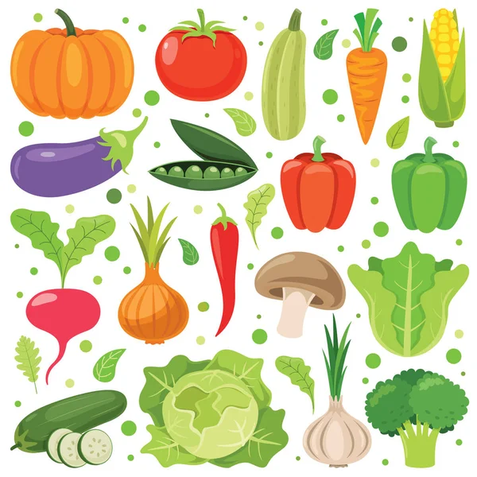

| Tipo de alimento | Ejemplos | Imagen |
|---|---|---|
| Frutas | Fresa, manzana, pera, sandia. | |
| Verduras | Jitomate, papa, cebolla, zanahoria. |  |
| Cereales | Arros, maiz, trigo, cebada, avena | |
| Leguminosas | Alfalfa, chicharo, garbanzo, habas ejote | |
| Origen animal | Carnes, huevos, pescado, mariscos | |
| Leche y sus derivados | Leche, crema, yogurt, mantequilla | |
Una alimentación saludable nos ayuda a tener un buen estado de salud, a sanar o realizar procesos de recuperación, a combatir
enfermedades e infecciones y a evitar enfermedades crónicas degenerativas causadas por la obesidad.
Si bien, todos tenemos necesidades diferentes de nutrición, lo que es igual para todos es tener hábitos de alimentación que
favorezcan nuestra salud y la de toda nuestra familia. La preparación de los alimentos debe ser higiénica, es mucho mejor
preparar los alimentos en casa y si es posible comer en compañía de la familia o amigos para poder disfrutar ese momento.
La dieta debe de ser variada y suficiente. Respecto a esto, en los siguientes blogs te mostraremos cuáles son las porciones
adecuadas para comer lo que tu cuerpo necesita.
Debemos aprovechar también los alimentos regionales en donde vivimos y los de cada estación ya que eso también nos ayudará a tener
una alimentación variada y económica.
Otra cosa importante es incluir en las comidas principales (desayuno, comida, cena) todos los grupos de alimentos, consumiendo
más verduras, debido a que nos dan satisfacción y contienen fibra, agua, vitaminas y elementos inorgánicos (minerales).